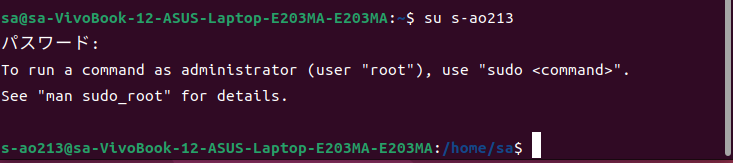
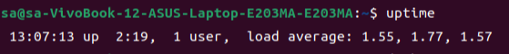
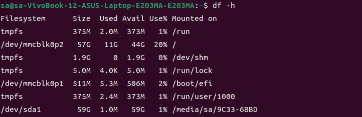
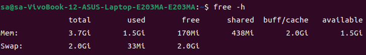
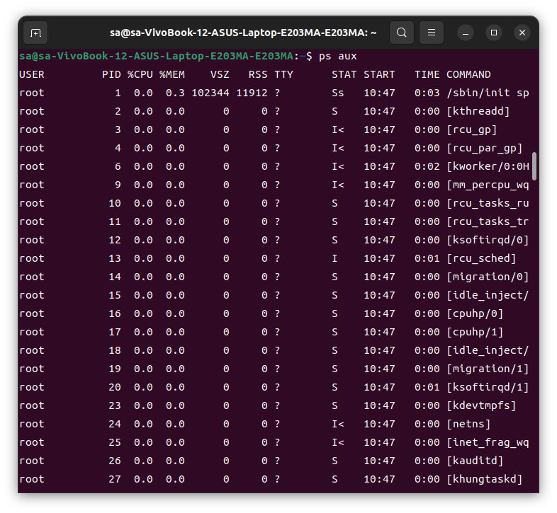
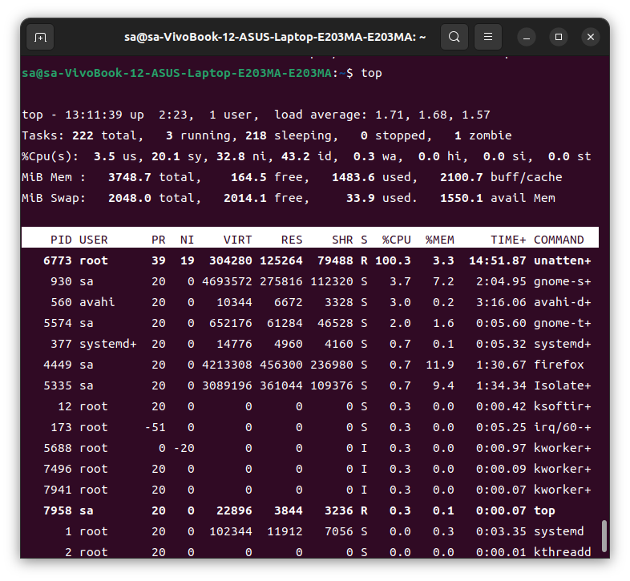
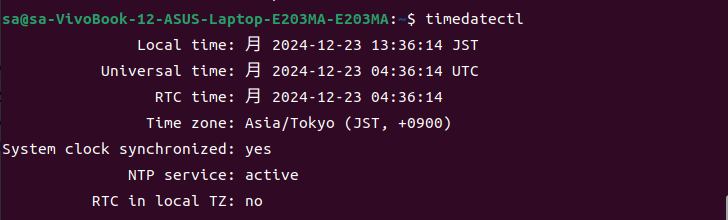
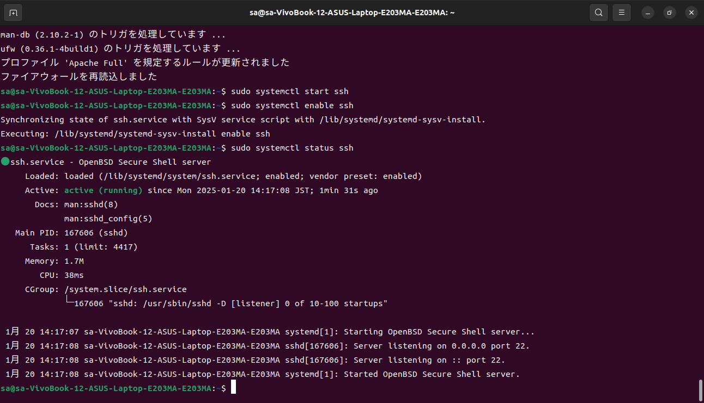
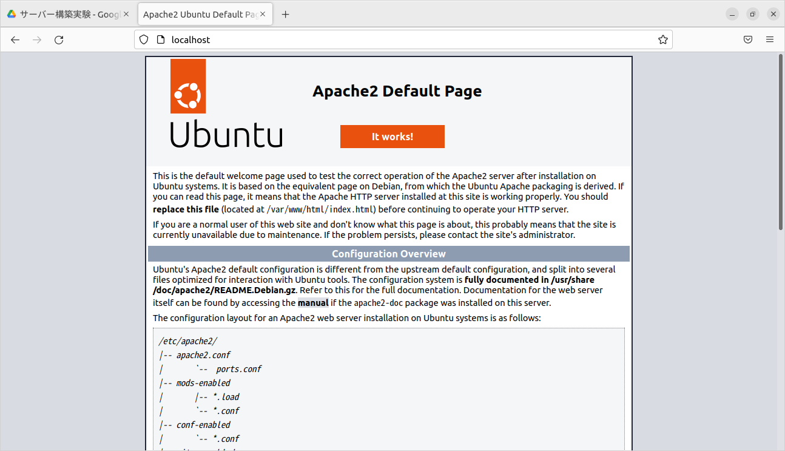

5. ユーザ管理
Linuxでは、基本的に一般ユーザを使い、管理者権限が必要な場合はrootユーザで作業を行います。すべての作業でrootユーザで行うと、ミスがあった場合の影響が大きくなるため、異なる目的に応じてユーザを使い分ける必要があります。
- 一般ユーザでのプロンプト末尾は「$」
- rootユーザでのプロンプト末尾は「#」
rootユーザのパスワード設定
初回インストール後、Ubuntuではrootユーザのパスワードは未設定のため、自分で設定する必要があります。
$ sudo passwd root
一般ユーザの追加・削除とグループの管理
- ユーザの追加

新規ユーザー作成のコマンドは$ sudo adduser ユーザ名です。設定を進めていくと上記画像のように住所や電話番号を登録するか聞かれますが、ここは任意なので登録しない場合は、Enterキーを押してスキップしても構いません。
- ユーザをグループへ追加
$ sudo usermod -aG グループ名 ユーザ名でグループに追加できます。
今使っているユーザーがどのようなグループに所属しているかの確認は下記画像のように$ groups グループ名でできます。

- 削除
グループからユーザーを削除する際は$ sudo gpasswd -d ユーザ名 グループ名のコマンドで実行できます。またユーザー自体を削除する際は、$ sudo userdel ユーザ名で削除することができます。
ユーザの切り替え
作業に応じて適切なユーザに切り替えるには su コマンドを使用します。

特定のユーザーに切り替えるためは上記の画像のように、$ su ユーザ名で切り替えることができます。rootユーザーへの切り替えは、$ suか$ su -で行います。su - を使うと、rootユーザへの切り替え時にホームディレクトリにも移動します。
sudoコマンド
管理者権限が必要な操作は、先ほども記述した通りセキュリティ上の観点からrootユーザを使うことは避け、代わりに sudo コマンドを使います。sudo を使用するためには、事前にユーザをsudoグループに追加しておく必要があります。
$ sudo コマンド名のコマンドを使用すると、rootユーザのパスワードを知らなくても管理者権限の作業を行うことができるため、Linuxシステムの管理がより安全に行えます。
6. 基本的なサーバ管理
サーバ負荷

サーバの稼働状況 (負荷)を確認し、十分に稼働できているのかを理解することで、サーバのスペックが十分かどうかの判断ができます。サーバの負荷を確認するには、uptime コマンドを実行します。
このコマンドを実行上記の画像にもあるように「load average」という項目が表示されます。左から順に、1分間での負荷、5分間での負荷、15分間での負荷が表示されます。これらの負荷がサーバのCPUコア数を下回る値であれば問題ありません。
しかし、コア数を上回る値が持続している場合は、サーバのスペックが不足しているため、増強が必要になります。
ディスク使用状況
ディスクの使用状況は df コマンドを使って確認できます。コマンドを実行する際は、単位が見やすくなる -h オプションを付けると良いでしょう。このコマンドで、サーバ内にマウントされているファイルシステムの一覧と各ファイルシステムの使用状況を表示します。
$ df -h

メモリとスワップ
メインメモリやスワップ領域の利用状況を把握する場合は、free コマンドを使います。この時も -h オプションを付けます。スワップ領域が常に利用されている場合は、メインメモリが不足しているため、メモリ増設の判断基準となります。
$ free -h

実行プロセス
実行中のプログラムはプロセスと呼ばれます。プロセスを確認するには、ps コマンドを使います。
$ ps aux
これにより実行中のすべてのプロセスが表示されますが、特定のプロセスについて確認したい場合は、less コマンドや grepを併せて使うことを推奨します。

システムモニタリング
システムの状態をリアルタイムにモニタリングしたい場合は、top コマンドを使用します。このコマンドは、uptime コマンドや free コマンド、ps コマンドで得られる結果をまとめて表示し、3秒ごとに情報が更新されます。
$ top

サービス管理
サービスは、OS本体から切り離し可能な特定の役割や機能を持ったサブシステムです。サービスには、ログ管理やネットワーク、各種サーバプログラムなどがあります。
サービスの起動や停止を管理するには systemctl コマンドを使用します。
$ systemctl サブコマンド サービス名
以下のサブコマンドが利用可能です：
start: サービスを開始するstop: サービスを停止するreload: サービスを再起動する（サービスの停止なしで設定を反映させる）restart: サービスを再起動する（サービスを停止し設定を反映させる）enable: システム起動時にサービスを自動的に開始するdisable: システム起動時にサービスが自動的に開始しないようにするstatus: サービスの状態を確認する
スケジュール管理
定期的にメンテナンス作業を実施する必要があります。指定したコマンドを定期的に実行する仕組みとして cron があり、crontab コマンドで管理されます。これにより、1日1回や1時間に1回、指定した処理を自動的に実行することが可能です。
自動実行の最小単位は1分です。
$ crontab [オプション]
利用できるオプションの例：
-e: スケジュール設定を編集する-l: スケジュール設定を表示する-r: すべてのスケジュール設定を削除する
スケジュールの書式は以下の通りです：
分 時 日 月 曜日 実行コマンド
具体的なスケジュール設定の例：
3 * * * *: 毎時3分に実行する30 23 * * *: 毎日23時30分に実行する30 23 1 * *: 毎月1日23時30分に実行する30 23 1 1 *: 毎年1月1日23時30分に実行する30 23 * * 0: 毎週日曜日23時30分に実行する*/5 * * * *: 5分ごとに実行する
コマンドを加えたスケジュール設定の例：
* * * * * /usr/bin/uptime >> /tmp/uptime.log: 1分ごとに uptime コマンドを実行し、結果を /tmp/uptime.log に追記する
また、スケジュール設定ファイルから記述する方法もあります。
/etc/crontab: システム全体のスケジュール/etc/cron.d/: 個別の設定ファイルを格納するディレクトリ/etc/cron.hourly/: 1時間ごとに実行される設定ファイルを格納するディレクトリ/etc/cron.daily/: 1日ごとに実行される設定ファイルを格納するディレクトリ/etc/cron.weekly/: 1週間ごとに実行される設定ファイルを格納するディレクトリ/etc/cron.monthly/: 1か月ごとに実行される設定ファイルを格納するディレクトリ
crontab コマンドは実行したユーザの権限下で各コマンドが実行されるため、管理者権限が必要なコマンドをスケジュールとして実行したい場合は、rootユーザに切り替えてから実行する必要があります。
時刻管理
サーバを運用する上で、システムの時刻の正確さは重要です。システムの時刻がずれていると、ログが活用できなくなったり、他のサーバとのやり取りでエラーが生じる可能性があります。Ubuntuでは、時刻管理を timedatectl コマンドで行います。
$ timedatectl

Webサーバー構築
ソフトウェアのインストール
サーバ構築に必要なソフトウェアをインストールするにはソフトウェア（パッケージ）マネージャであるaptコマンドを利用します。
コマンドの書式
$ sudo apt install パッケージ名
サーバソフトウェアのインストール:Apache HTTP Server
WebサーバとWebブラウザの関係
Webブラウザには、Edge、Chrome、Safari、Firefoxなど様々な種類がありますが、今回使用するUbuntuでは標準でFirefoxがインストールされています。Webブラウザは、Webサーバとの通信を試み、Webページのコンテンツ情報を取得しブラウザ上に表示してくれます。このとき、ブラウザとサーバ間ではHTTP（Hypertext Transfer Protocol）というプロトコルを使って通信が行われています。
Apache HTTP Serverのインストール
Apache HTTP Server（以下、Apache）はApache Software Foundationが開発しているオープンソースソフトウェアのうちの1つで、Linux環境におけるWebサーバとして高いシェアを持っています。は、今回はApacheをインストールしサーバ構築を試みます。
Apacheのインストール
$ sudo apt update # インストール前にパッケージの更新
$ sudo apt -y install apache2 # Apache HTTP Server のインストール
Apacheの起動
$ sudo systemctl start apache2 # Apacheの起動
$ sudo systemctl enable apache2 # Apacheの自動起動の有効化
$ sudo systemctl status apache2 # Apacheのステータス

最後に、ブラウザから「http://<サーバのIPアドレス>」にアクセスし、Apacheのウェルカムページが表示されれば完了です。もし、サーバ上でWebサーバにアクセスする場合、「http://localhost」と検索することで表示できます。

Apacheの設定
インストールしたApacheの設定ファイルは「/etc/apache2/apache2.conf」や「/etc/apache2/sites-available/000-default.conf」で管理するのが一般的です。
主なディレクティブ
- ServerRoot：設定ファイル等を配置するトップディレクトリ（/etc/apache2）
- Listen：Apacheが受け付けるポート番号（80番）
- User：Apacheの実行ユーザ（www-data）
- Group：Apacheの実行グループ（www-data）
- ServerAdmin：Apacheの管理者（webmaster@localhost）
- ServerName：Webサーバ名（www.example.com）
- DocumentRoot：Webページを配置するディレクトリ（/var/www/html）
- DirectoryIndex：サーバ名でアクセスしたときに表示するファイル（index.html）
DocumentRootとDirectoryIndex
DocumentRootは、Webで公開するコンテンツを格納しているトップディレクトリを指し示していまし。つまり、「http://<サーバのIPアドレス>にアクセスする = /var/www/htmlにアクセスする」ということになります。例えば、「/var/www/html/index.html」にアクセスする場合は「http://<サーバのIPアドレス>/index.html」と記述すればいいということです。
DirectoryIndexは、表示するWebページを指定せずに「http://<サーバのIPアドレス>」とアクセスしたときに表示するファイルを指し示します。
仮想ホストの作成
Apacheをインストールした直後は、「/etc/apache2/sites-available/000-default.conf」がデフォルトの仮想ホストとして設定されています。デフォルトの仮想ホストの設定ファイルを残したまま異なる仮想ホストを作りたい場合は、「/etc/apache2/sites-available/」直下に新たな設定ファイルを作成します。
仮想ホストの設定ファイルの作成
$ sudo touch /etc/apache2/sites-available/ファイル名.conf
設定ファイルの編集
<VirtualHost *:80>
ServerAdmin webmaster@localhost
DocumentRoot ディレクトリパス
DirectoryIndex ファイル名
ErrorLog ${APACHE_LOG_DIR}/error.log
CustomLog ${APACHE_LOG_DIR}/access.log combined
</VirtualHost>
ディレクトリの作成
$ sudo mkdir -p ディレクトリパス
ファイルの作成とサンプルコードの記述
$ sudo touch ディレクトリパス/ファイル名
$ sudo vi ディレクトリパス/ファイル名
<html>
<body>
<h1>Welcome to my page</h1>
</body>
</html>
仮想ホストの有効化
$ sudo a2ensite ファイル名.conf # 仮想ホストの有効化
$ sudo systemctl reload apache2 # 有効化した仮想ホストをサーバに反映
デフォルトの仮想ホストの無効化
$ sudo a2dissite 000-default.conf # 仮想ホストの無効化
$ sudo systemctl reload apache2 # 有効化した仮想ホストをサーバに反映
ファイアウォールの設定
Ubuntuでは、ファイアウォールの設定にufwコマンドを利用します。構築したWebサーバへのアクセスを許可するには以下のコマンドを実行します。
ファイアウォールの有効化とポート開放
$ sudo ufw enable # ファイアウォールの有効化
$ sudo ufw allow 'Apache' # 80番ポートの開放
$ sudo ufw status
Status: active
| To |
Action |
From |
| Apache |
ALLOW |
Anywhere |
| Apache (v6) |
ALLOW |
Anywhere (v6) |
Apacheに関するポート開放（補足）
# 80番ポートの開放
$ sudo ufw allow 'Apache'
$ sudo ufw allow 80/tcp
# 443番ポートの開放
$ sudo ufw allow 'Apache Secure'
$ sudo ufw allow 443/tcp
# 80番と443番ポートの同時開放
$ sudo ufw allow 'Apache Full'
パスワード認証の設定
通常、何も設定していない場合はアクセスすることでWebページの閲覧ができます。しかし、特定のユーザのみが閲覧できるWebページを作成しなければならない場合も存在します。最新バージョンでは、apache2のインストールに含まれており、apache2-utilsを別途インストールする必要がないです。ただし、バージョンや環境によっては含まれていない可能性もあるため、念のため実行しておきましょう。
apache2-utilsパッケージのインストール
$ sudo apt install apache2-utils
ユーザの登録
$ sudo htpasswd -c /etc/apache2/.htpasswd ユーザ名 # 初回
$ sudo htpasswd /etc/apache2/.htpasswd ユーザ名 # 次回以降
設定ファイルの編集
<Directory "認証を利用するディレクトリパス">
AuthType Basic
AuthName "Restricted Content"
AuthUserFile /etc/apache2/.htpasswd
Require valid-user
</Directory>
アクセスログ
Linuxのシステムログとは別に、Apacheで管理されるログの一つにアクセスログがあります。アクセスログでは、以下のような情報が記録されます。
- リクエストされたURL
- アクセス元のIPアドレス
- ユーザエージェント（ブラウザの種類など）
- ステータスコード
- リクエストのタイムスタンプ
アクセスログ例1
10.20.227.149 - webuser [11/Aug/2023:19:21:56 +0900] "GET /htmltest.html HTTP/1.1" 200 95 "-" "Mozilla/5.0" (Windows NT 10.0; Win64; x64; rv:109.0) Gecko/20100101 Firefox/116.0"
ステータスコード
- 200 (OK)：リクエスト成功
- 401 (Unauthorized)：ユーザ認証が必要なページでリクエスト失敗
- 403 (Forbidden)：アクセスが禁止されている
- 404 (Not Found)：リクエストされたページが存在しない
- 500 (Internal Server Error)：サーバ内部でエラーが発生
エラーログ
Apacheでは、アクセスログ以外にも、サーバ内部の処理に関するエラーログが記録されます。エラーログはデフォルトでは、/var/log/apache2/error.logに記録されます。
エラーログ例1
[Fri Aug 11 19:19:55.939089 2023] [autoindex:error] [pid 1453:tid 1647] [client 10.20.227.149:60226] AH01276: Cannot serve directory /var/www/html/: No matching DirectoryIndex (index.html) found, and server-generated directory index forbidden by Options directive
エラーログ例2
[Fri Aug 11 19:22:34.316445 2023] [auth_basic:error] [pid 1459] [client 10.20.227.149:60226] AH01618: user webusr not found: /
SSHの設定
SSH（Secure Shell）
サーバ管理・運用を行う上で、SSHを利用する機会は多くなります。SSHは、リモートホスト間の通信を安全に行うための仕組みです。認証機能や暗号化を用いて、サーバのリモート操作やファイル転送を行う場合に利用されます。
認証の種類
ホスト認証
接続先のホストの正当性を確認するための仕組みであり、意図しないサーバへの接続による危険を排除する目的があります。SSH接続時に、サーバから固有のホスト認証鍵（公開鍵）がクライアントに送付され、クライアントが保有しているサーバのホスト認証鍵と比較します。初回の接続時にはクライアント側はホスト認証鍵を保有していないため、サーバから送付されるホスト認証鍵を登録する必要があります。
ユーザ認証
|
パスワード認証 |
公開鍵認証 |
| 認証に要求される要素 |
|
|
| セキュリティ |
総当たり攻撃に対して脆弱 |
秘密鍵の流出がない限り安全 |
SSHサーバの構築
SSHのインストール
UbuntuでSSHサーバを構築する場合は、OpenSSHを利用します。
OpenSSHのインストール
$ sudo apt install openssh-server
OpenSSHの起動
$ sudo systemctl start ssh
$ sudo systemctl enable ssh
$ sudo systemctl status ssh
ポート番号の設定
設定ファイルのバックアップ作成
$ sudo cp /etc/ssh/sshd_config /etc/ssh/sshd_config_backup
ポート番号の設定パラメータ
Port 任意のポート番号
ファイアウォールの設定
$ sudo ufw allow 任意のポート番号/tcp
ログインの制限
rootログインの設定パラメータ
PermitRootLogin no
許可ユーザの設定パラメータ
AllowUsers ユーザ名
SSHログイン
コマンドの書式
$ ssh ユーザ名@ホスト名（もしくはIPアドレス） -p ポート番号
初回接続時の注意
初回接続時には、サーバのホスト認証鍵（公開鍵）の登録を行うかどうかの確認をされます。接続先のサーバが正しい場合は、「yes」と入力してください。
The authenticity of host 'ホストIPアドレス (ホスト名)' can't be established.
ED25519 key fingerprint is SHA256:npjwO0VdD1oDSPJJFnTKIdSqDflS4xIrPFoNpN1fkJI.
This key is not known by any other names
Are you sure you want to continue connecting (yes/no/[fingerprint])? yes
2段階認証の利用
設定の手順は以下の通りになる：
- SSH接続を利用するクライアントPCの公開鍵・秘密鍵を生成する
- 生成したクライアントPCの公開鍵をサーバに登録する
- サーバのSSH設定ファイルを編集する
- SSH接続のテストをする
クライアントの公開鍵・秘密鍵生成
コマンドの書式
$ ssh-keygen -t 暗号化アルゴリズム -f ファイル名
ssh-keygenでは、「dsa」、「rsa」、「ecdsa」、「ed25519」が選択できるが、「dsa」は脆弱であるため、今後OpenSSHから削除される予定となってます。
鍵生成の例
$ ssh-keygen -t ed25519 -f ./.ssh/id_ed25519
公開鍵の登録
公開鍵の登録
$ cat $HOME\.ssh\公開鍵のファイル名 | ssh ユーザ名@ホスト名（もしくはIPアドレス） -p ポート番号 "mkdir -p ~/.ssh && chmod 700 ~/.ssh && cat >> ~/.ssh/authorized_keys && chmod 600 ~/.ssh/authorized_keys"
設定ファイルの編集
2段階認証のパラメータ追加
AuthenticationMethods publickey,password
接続テスト
設定が完了したら、以下の手順でテストを行う：
- 生成した秘密鍵を削除した状態でSSH接続をし、通信が許可されないことを確認
- 秘密鍵をもとに戻した状態で接続し、パスワードが要求されることを確認
Dockerの設定
Dockerとは
Dockerは仮想化技術の一つであるコンテナ型仮想化を提供するソフトウェアです。物理マシン上で動作し、コンテナと呼ばれる実行環境を管理します。Oracle VM VirtualBoxやVMware Fusionなど、従来のホスト型仮想化と異なり、構築されるコンテナにはゲストOSを必要としないという特徴があります。
利点
- リソース効率が良い
- 計算処理のオーバーヘッドが少ない
- イメージを利用して手軽に環境構築が可能
- 環境を汚すことなく構築可能
注意：ホストOSがLinuxであることが要求されるため、WindowsではWindows Subsystem for Linux（WSL）などの仮想環境が必要です。
Dockerのインストール
UbuntuでDockerをインストールする手順を説明します。この手順はDocker公式ドキュメントに準拠しています。
Dockerのインストール手順
# Add Docker's official GPG key:
$ sudo apt-get update
$ sudo apt-get install ca-certificates curl
$ sudo install -m 0755 -d /etc/apt/keyrings
$ sudo curl -fsSL https://download.docker.com/linux/ubuntu/gpg -o /etc/apt/keyrings/docker.asc
$ sudo chmod a+r /etc/apt/keyrings/docker.asc
# Add the repository to Apt sources:
$ echo "deb [arch=$(dpkg --print-architecture) signed-by=/etc/apt/keyrings/docker.asc] https://download.docker.com/linux/ubuntu $(. /etc/os-release && echo "$VERSION_CODENAME") stable" | sudo tee /etc/apt/sources.list.d/docker.list > /dev/null
$ sudo apt-get update
$ sudo apt-get install docker-ce docker-ce-cli containerd.io docker-buildx-plugin docker-compose-plugin
インストール確認
$ sudo docker --version
$ sudo systemctl status docker
ユーザーの追加とDockerの再起動
$ sudo usermod -aG docker $USER
$ newgrp docker
Dockerの基本知識
Dockerで操作可能な主な対象
- Container（コンテナ）
- Image（イメージ）
- Volume（ボリューム）
- Network（ネットワーク）
コンテナのプロセスとPID1
コンテナはコマンドを実行するための環境です。プロセスの停止がそのほか全てのプロセスの停止につながるようなプロセスのことをPID1と呼びます。
コンテナのステータス
- created: コンテナは作成されているが、PID1は存在しない
- running: コンテナが起動しており、PID1も存在する
- paused: コンテナが一時停止されており、PID1も停止している
- restarting: コンテナが再起動しており、running状態に遷移する
- exited: コンテナが終了されており、PID1は存在しない
- dead: コンテナが終了に失敗し、running状態に復旧できない
- removing: コンテナが削除されている
コンテナのコマンド一覧
確認系コマンド
ls: コンテナの一覧を表示inspect: コンテナの詳細情報を表示port: ポートの割り当て状況を表示top: 実行中のプロセスを表示stats: リソース情報を表示diff: 変更されたファイル一覧を表示
変更系コマンド
create: コンテナを作成start: コンテナを起動pause/unpause: コンテナの一時停止/解除restart: コンテナを再起動stop: コンテナを停止kill: コンテナを強制停止rm: コンテナを削除
命令系コマンド
logs: コンテナのログを表示exec: 起動中のコンテナでコマンドを実行attach: ターミナルの入出力を対応付けcommit: イメージを作成cp: ファイルをコピー
Dockerを用いたWebサーバの構築
Webサーバ管理用のディレクトリ作成
$ mkdir -p ~/ディレクトリ名/htdocs ~/ディレクトリ名/conf
httpdコンテナの起動
$ cd ~/ディレクトリ名
$ docker run -dit --name my-apache-app -p 8080:80 \
-v ./htdocs:/usr/local/apache2/htdocs/ \
-v ./conf:/usr/apache2/conf httpd:2.4